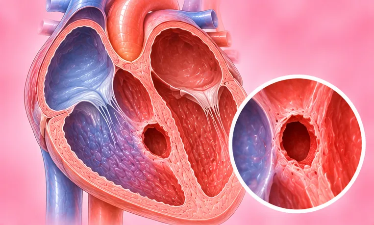

Penyakit jantung kongenital (sejak lahir)
Masalah jantung yang ada sejak lahir: jantung atau saluran darah utamanya terbentuk secara berbeza
Apa itu
Sebelum lahir, jantung atau saluran darah besar di sebelahnya tidak terbentuk dengan cara biasa. Ia boleh ringan atau serius, dan sesetengah orang hanya mengetahuinya apabila dewasa.
- Jantung dan dada
- Ada sejak lahir
- Mudah penat atau semput
- Jumpa doktor
- Doktor jantung (pakar kardiologi); pakar jantung kanak-kanak untuk bayi dan kanak-kanak
- Biasa pada
- Bayi yang dilahirkan dengan masalah ini; sesetengah orang dewasa hanya mengetahuinya kemudian
- Berjangkit
- Tidak
- Perjalanan
- Bergantung pada jenisnya; ramai orang perlu pemeriksaan berkala dengan doktor jantung
Tanda biasa

Selalunya tiada tanda pada awalnyaAsimptomatik 
Bayi kurang menyusuPenyusuan lemah 
Semput bila naik tanggaDispnea semasa bergiat 
Kaki dan buku lali bengkakEdema periferi
Tanda-tanda lain
- Bibir, lidah atau kulit kebiruan
Mengapa ia berlaku

Punca belum diketahui sepenuhnyaIdiopatik 
Diwarisi dalam keluargaKecenderungan genetik 
Kuman (jangkitan)Punca jangkitan 
MerokokPenggunaan tembakau
Punca lain
- Jantung atau saluran darah besarnya tidak terbentuk sepenuhnya sebelum lahir
Jumpa doktor dahulu jika
- Bayi dengan bibir atau kulit kebiruan, pernafasan laju atau susah, atau tidak mahu menyusu: ke hospital segera
- Bayi atau kanak-kanak yang sangat mengantuk, lembik atau sukar dikejutkan: ke hospital segera
- Pengsan, sakit dada, atau sukar bernafas yang teruk: hubungi 999
- Jantung berdegup laju atau tidak sekata yang tidak reda, atau disertai pening
- Kaki, buku lali atau perut bengkak, atau lebih mudah penat dan semput
- Demam yang berlarutan beberapa hari pada orang yang ada masalah jantung
Jika mana-mana berkenaan, sila jumpa doktor sebelum sesi.
Halaman ini ialah maklumat am. Sila terus mengambil ubat biasa anda dan terus berjumpa doktor.
Teruskan mengambil ubat biasa anda dan terus berjumpa doktor. Sesi kami ialah sokongan lembut dan tidak menggantikan rawatan perubatan.
Menjaga diri

Jumpa doktor untuk pemeriksaanSusulan perubatan berkala 
Pemeriksaan doktor gigi berkalaPemeriksaan pergigian 
Tanya ahli farmasiNasihat ahli farmasi
Lebih banyak cara menjaga diri
- Tanya doktor jenis aktiviti yang selamat untuk anda atau anak anda
- Jika merancang untuk hamil, bincang dengan doktor jantung dahulu
Beritahu ahli terapi anda
- Penyakit jantung
- Perentak jantung atau implan logam
- Ubat pencair darah
- Kehamilan
Ahli terapi anda akan menyemaknya bersama anda sebelum bermula.
Soalan dan jawapan
Apakah Penyakit jantung kongenital (sejak lahir)?
Masalah jantung yang ada sejak lahir: jantung atau saluran darah utamanya terbentuk secara berbeza. Sebelum lahir, jantung atau saluran darah besar di sebelahnya tidak terbentuk dengan cara biasa. Ia boleh ringan atau serius, dan sesetengah orang hanya mengetahuinya apabila dewasa.
Apakah tanda biasa Penyakit jantung kongenital (sejak lahir)?
Selalunya tiada tanda pada awalnya · Bayi kurang menyusu · Semput bila naik tangga · Kaki dan buku lali bengkak
Mengapa Penyakit jantung kongenital (sejak lahir) berlaku?
Punca belum diketahui sepenuhnya · Diwarisi dalam keluarga · Kuman (jangkitan) · Merokok
Bagaimana menjaga diri dengan Penyakit jantung kongenital (sejak lahir)?
Jumpa doktor untuk pemeriksaan · Pemeriksaan doktor gigi berkala · Tanya ahli farmasi
Bolehkah sesi AI Body Master membantu Penyakit jantung kongenital (sejak lahir)?
Sesi ialah sokongan meridian tanpa jarum yang lembut untuk kesejahteraan anda. Ia tidak merawat atau menyembuhkan Penyakit jantung kongenital (sejak lahir) dan tidak menggantikan ubat atau doktor anda. Beritahu ahli terapi anda sebelum sesi bermula.
Keadaan berkaitan
- Angina varian (angina Prinzmetal)
- Miokarditis virus (radang otot jantung)
- Sindrom sinus sakit
- Blok berkas cabang kanan tidak lengkap
- Angina tidak stabil
- Urat varikos pada kaki (vena safena besar)
- Tekanan darah rendah
- Fistula arteriovenus (fistula AV)
- Batuk kokol (pertusis)
- Pneumonia virus (radang paru-paru)
- Pneumokoniosis (penyakit paru-paru akibat habuk)
- Tuberkulosis paru-paru lama (TB telah sembuh)
Rujukan: General information based on public health sources such as Mayo Clinic, NHS, Cleveland Clinic and NCBI StatPearls.
Halaman dikemas kini: 2026-11-05